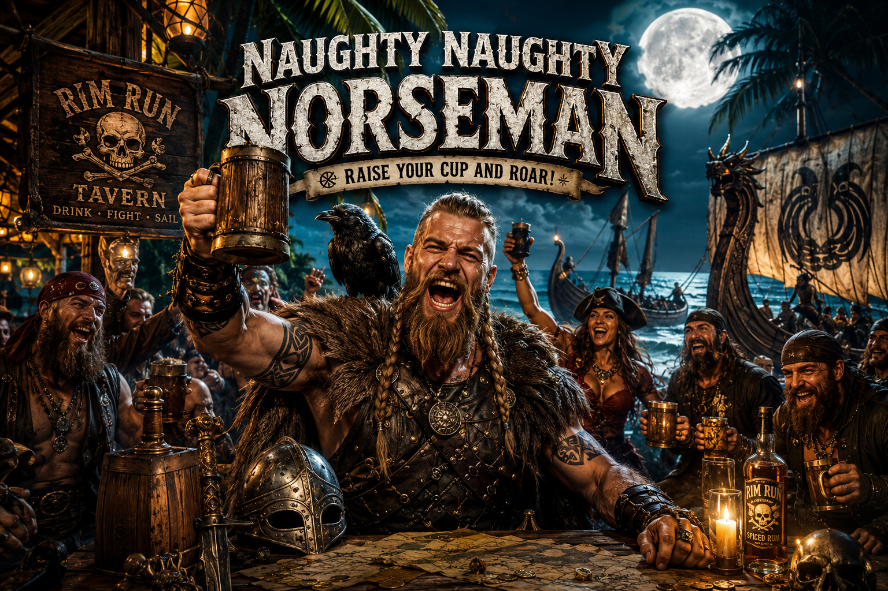

The official theme song of the Blue Rim 5 expedition. Written in the White Mountains of Arizona on a Sunday morning. Copyrighted. Arizona-born. Bound for the sea.
Some songs arrive when you need them. "Only Arizona" arrived on a Sunday morning at Nevado Ranch, 6,500 feet up in the White Mountains of Arizona — in the middle of planning one of the most ambitious sailing expeditions ever attempted.
The Blue Rim 5 is a 1,302-day journey through 31 countries aboard Shamrocket — a 17-foot Hobie Getaway catamaran departing Pensacola, Florida on November 1, 2026. The expedition runs through the Bahamas and Eastern Caribbean, the full Western Caribbean circuit along the Mesoamerican Reef, and down the Pacific coast of South America to Chile — then north to the Canadian border — then back to Panama where the only question left is what comes next.
The expedition is built around one defiant idea: Arizona is one of the most beautiful and varied states in the union — sky islands, saguaro desert, red rock canyon country, ancient ruins, and one of the largest veteran populations in America. It has everything. Except a coastline. The Blue Rim 5 changes that. Every stop, every country, every reef, every waterfront bar across 31 countries — Arizona is there. The copper star of the state flag flies from Shamrocket's mast across every sea on the route.
Lyrics and composition are copyrighted and not published publicly. Press play to hear the track.
Dedicated to Cintia.
"Only Arizona" — lyrics and composition — are the intellectual property of Daniel O. Roe / Nevado Ranch Camp LLC. Registered with the United States Copyright Office, Case #1-15195035931. All rights reserved. No reproduction, recording, arrangement, or public performance without written authorization from Nevado Ranch Camp LLC.
Contact: nevadoraiders@gmail.com • 928-250-9763 • PO Box 338, Vernon, AZ 85940

A second original song from Catamaran Dan — written for Norway's 2026 World Cup run, now updated for the road to the final: black rum, dice on the barrel, a Norseman who answers to no chain, and a Rio night that turned a football story into a love story. Lyrics and composition are copyrighted and not published publicly. Press play to hear the track.
"Naughty, Naughty Norseman" — lyrics and composition — are the intellectual property of Daniel O. Roe / Nevado Ranch Camp LLC. All rights reserved. No reproduction, recording, arrangement, or public performance without written authorization from Nevado Ranch Camp LLC.
Contact: nevadoraiders@gmail.com • 928-250-9763 • PO Box 338, Vernon, AZ 85940
Backing the Boys in Red, White & Blue through the knockout rounds — Norway knocked out Brazil in the Round of 16 and marched into the quarterfinals, the deepest World Cup run in the nation's history.
Israel Kamakawiwoʻole was born on May 20, 1959, in Honolulu, Hawaii. He died on June 26, 1997, at the age of 38. In the years between, he became one of the most beloved musicians the world has ever produced — not because of industry machinery or carefully managed fame, but because of something far simpler and far rarer: a voice that made people feel less alone.
He played ukulele. He sang in Hawaiian and in English. He was a founding member of the Makaha Sons of Niʻihau, one of the most important Hawaiian music groups of the modern era. His 1993 medley of "Somewhere Over the Rainbow" and "What a Wonderful World" — recorded in a single late-night session, accompanied only by his ukulele — went on to become one of the most recognized recordings in the history of popular music. It has appeared in more than 60 films and television programs. It has been streamed billions of times.
When Israel Kamakawiwoʻole died in 1997, the State of Hawaii flew its flags at half-mast. His body lay in state at the Hawaii State Capitol — an honor extended to only a handful of civilians in the state's history. When his ashes were scattered into the Pacific Ocean off Mākua Beach on the Oʻahu coast, thousands watched from shore and from canoes on the water. He went home the way Hawaiians go home — back to the kai, back to the land, back to the sea.
He was 38 years old. He left behind a body of music that grows in meaning with every passing year, a language revitalization movement he helped inspire, and a world that is measurably quieter without him. He also left behind something harder to name — a feeling. The feeling that simplicity is not a lesser thing. That a man and a ukulele and genuine love for what he is singing about can reach further than any production budget or marketing campaign. That aloha is not a word. It is a way of moving through the world.
I play baritone ukulele. It was his music that put the instrument in my hands — and it is his spirit that I carry every time I pick it up. I cannot say his name the way it deserves to be said. Hawaiian is still a task beyond me. But because of Izzy, I now carry aloha in my heart. Every reef I dive. Every coastline I sail. Every evening the anchor goes down.
Hawaiian folk. 68 BPM. Baritone ukulele. Written somewhere between the desert and the deep blue — for the man whose voice still fills the ocean.
For Izzy. The water kept you warm.
"Please" — lyrics and composition — are the intellectual property of Daniel O. Roe / Nevado Ranch Camp LLC. All rights reserved. No reproduction, recording, arrangement, or public performance without written authorization from Nevado Ranch Camp LLC.
Contact: nevadoraiders@gmail.com • 928-250-9763 • PO Box 338, Vernon, AZ 85940